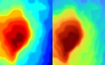
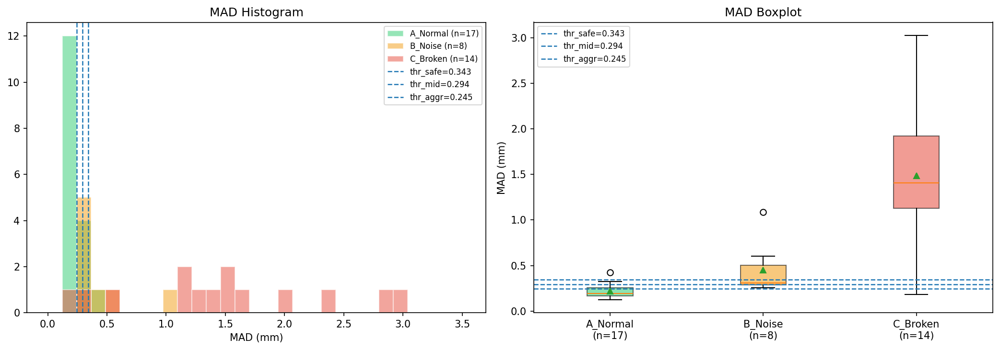
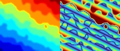
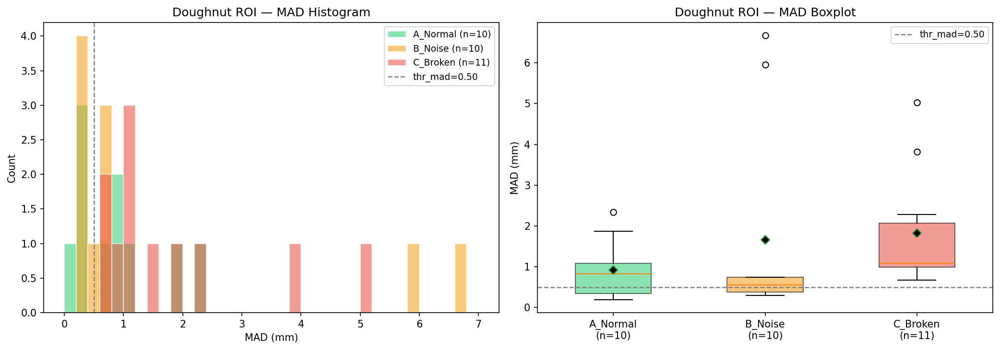

输入为 RGB 图像与 16-bit 深度图，预处理阶段保持 letterbox 对齐。
Corrugated Cardboard Defect Inspection
RGB-D + YOLO11 + 物理变形分析的混合视觉检测系统
项目面向瓦楞纸板缺陷检测，将 RGB 图像、16-bit 深度图、YOLO11 检测输出、 SCFM/attention mask hook 和深度残差统计组合成一条可解释的检测流程。

使用本地 Ultralytics YOLO11 管线完成 box / damage 检测。
Phase 3 safe threshold 下 FAR 记录值。
Phase 3 safe threshold 下 F1 记录值。
Technical Pipeline
从检测框到深度物理判定
管线中的每一步都对应项目中的现有代码或输出文件。
RGB-D 预处理
main_pipeline.py 与 run_experiment.py 将 RGB 和 depth 统一 resize、pad，并生成 4 通道 tensor。
YOLO11 推理
加载本地权重，对瓦楞纸板图像执行检测，类别来自 dataset.yaml：box、damage。
Mask Hook
core/hook_handler.py 通过 forward hook 捕获空间注意力图，并融合为全局置信 mask。
物理变形评估
core/physical_engine.py 在 ROI 内使用有效深度点、mask 阈值、Sobel 梯度和方差阈值给出 broken 判定。
Experiment Evidence
项目输出中的关键结果
以下数值与图片来自当前仓库的 output/ 目录。

Phase 1 深度数据审计
样本深度图为 uint16，ROI 平均有效深度比例为 0.9977，深度单位按 mm 处理。
Phase 2 深度基线
记录了 normal 与 broken 的 MAD 分布边界，得到 thr_mad = 0.1936018467。
Phase 3 系统评估
safe threshold 记录：FAR 0.0500、TPR 0.6000、Precision 0.9231、F1 0.7273。


Repository Map
核心代码结构
main_pipeline.py
单样本 RGB-D 预处理、YOLO11 推理、mask 提取和物理变形评估入口。
run_experiment.py
批量收集图像和深度配对，输出实验结果和 per-sample 记录。
core/hook_handler.py
封装 SCFM/attention mask 捕获、归一化、上采样和多尺度融合。
core/physical_engine.py
封装 ROI 裁剪、有效深度过滤、梯度统计和 broken 判定。
tests/
包含 Phase 1、Phase 2、Phase 3、RGB-D 转换、阈值校准和系统指标相关测试。
output/
保存深度审计、残差可视化、阈值分布、before/after comparison 和系统指标。
Run Locally
本地运行入口
以下命令对应当前项目脚本；权重和数据路径按本地实际位置调整。
python main_pipeline.py --weights weights/best.pt --device cpupython run_experiment.py --weights weights/best.pt --device cpu